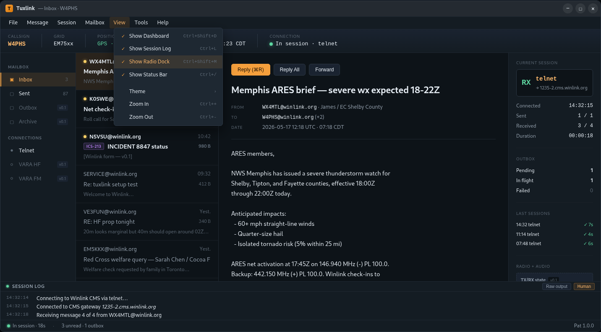
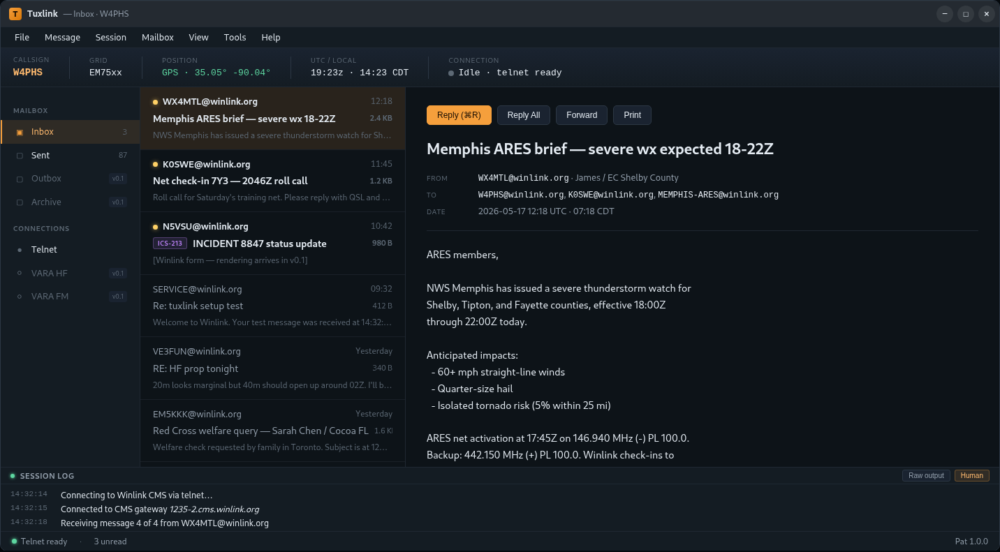

The canonical tuxlink window (synthesis dock-on shape) shown on three target distributions · 1600×950 viewport · pure CSS desktop chrome (no external assets)
Tuxlink is a native desktop app built with Tauri (Rust backend + WebKitGTK-rendered web frontend, presented as a native window — no browser involved from the user's perspective). These scenes show the same canonical window from synthesis-dock-on.png sitting on each of the three primary target distributions, with that desktop environment's panel, dock, and wallpaper vibe rendered around it.
The window draws its own headerbar (the Adwaita-style `−` `□` `×` controls), as is convention for cross-platform Tauri / Electron / Chromium-based apps on Linux (Discord, Slack, VS Code, Telegram, etc.). The DE's window manager is configured to not draw additional decorations.
Distribution: AppImage (single-file executable, no install required — plan Task 17). The user double-clicks; the app appears as a native window. Compose, settings, and per-callsign windows are separate native windows (plan Task 14 amendment per the canonical design doc), not in-page modals.

